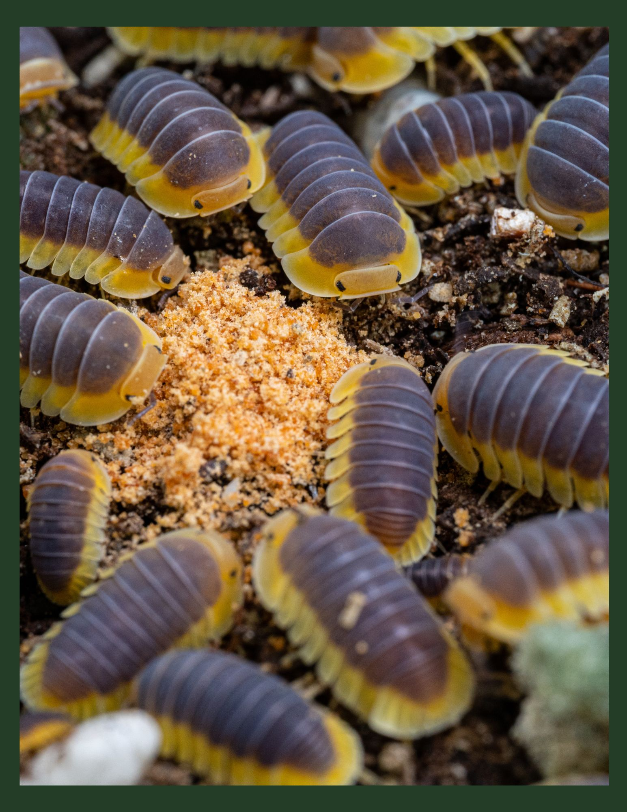
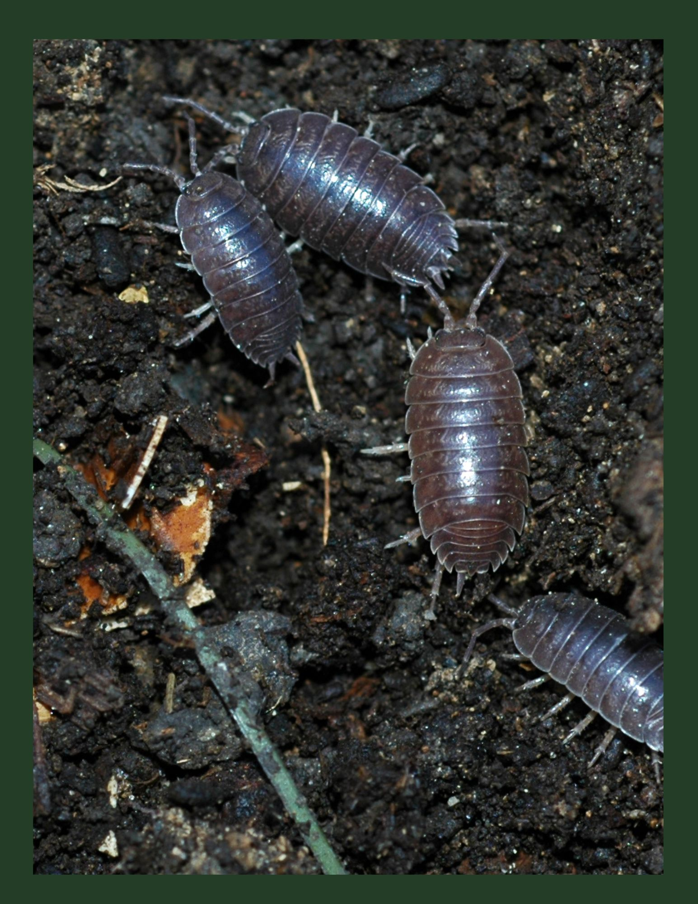
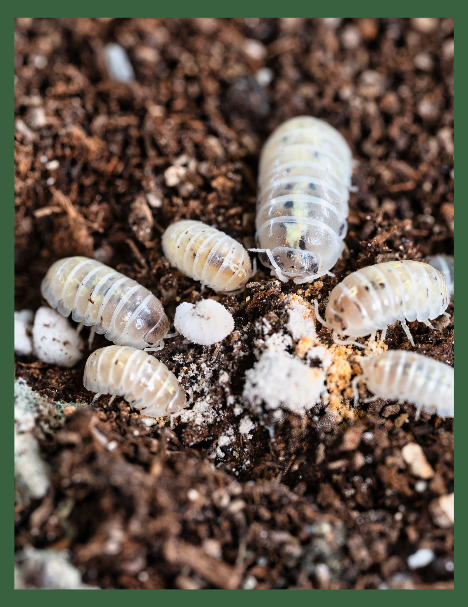

THE FOUNDATION
↗
Enclosure & Substrate
Learn how to choose an enclosure, create a suitable substrate, provide leaf litter and hiding places, and establish the foundation of a healthy colony.
ROOT & ROT / ISOPOD LIBRARY
From colorful Cubaris varieties to the familiar Dairy Cow isopod, discover the fascinating diversity of terrestrial isopods. Browse different genera, explore species and color morphs, and learn how to create thriving habitats for these remarkable creatures.
Explore Isopod GeneraDISCOVER THE ISOPOD LIBRARY
From familiar garden dwellers to colorful captive-bred varieties, terrestrial isopods come in an incredible range of shapes, sizes, and patterns. Explore different genera and discover the species and morphs within each group.

Explore a fascinating group of isopods known in the hobby for their rounded bodies and variety of distinctive appearances.
Discover species and varieties such as Cubaris murina 'Papaya' and other popular hobby forms.

Meet a diverse genus containing many well-known terrestrial isopods, from common woodlice to larger, striking species.
Explore Porcellio laevis 'Dairy Cow', Porcellio scaber, and other fascinating species.

Known for their ability to curl into a protective ball, these isopods include many familiar and beautifully patterned forms.
Discover Armadillidium vulgare, the striped Zebra isopod, and other colorful varieties.
Small, active isopods that include popular species used in suitable bioactive habitats and dedicated colonies.
Explore Porcellionides pruinosus varieties such as Powder Orange and Powder Blue.
THE ART OF KEEPING ISOPODS
A thriving colony begins with understanding the environment your isopods need. Explore the essentials of responsible isopod care, from creating their habitat to supporting healthy colony growth.
Learn how to choose an enclosure, create a suitable substrate, provide leaf litter and hiding places, and establish the foundation of a healthy colony.
Understand moisture gradients, ventilation, and hydration. Discover why different species require different conditions and how to recognize problems.
Explore leaf litter, decaying wood, calcium sources, and supplemental foods that support growth, molting, and reproduction.
Learn about reproduction, caring for young isopods, monitoring colony populations, and recognizing signs of a healthy breeding colony.
Healthy colonies begin with thoughtful care.
COLONY HEALTH & TROUBLESHOOTING
Even carefully maintained colonies can encounter challenges. Learn how to recognize common problems, understand possible causes, and make thoughtful adjustments to your enclosure.
Explore possible causes of unexpected deaths, including environmental stress, moisture imbalance, temperature, and enclosure conditions.
Explore the GuideDiscover why mold appears, when fungal growth is a normal part of decomposition, and how springtails and enclosure maintenance can help.
Explore the GuideLearn to recognize excessive moisture, drying substrate, and poor ventilation, and how to maintain an appropriate moisture gradient for your species.
Explore the GuideIdentify common organisms that appear in isopod enclosures, distinguish harmless decomposers from potential problems, and learn when action may be needed.
Explore the GuideKEEP EXPLORING
From the tiniest newborn isopod to the remarkable colors and patterns found across different species, there's always something new to discover. Continue exploring the fascinating world of bioactive ecosystems with Root & Rot.
Explore Root & Rot